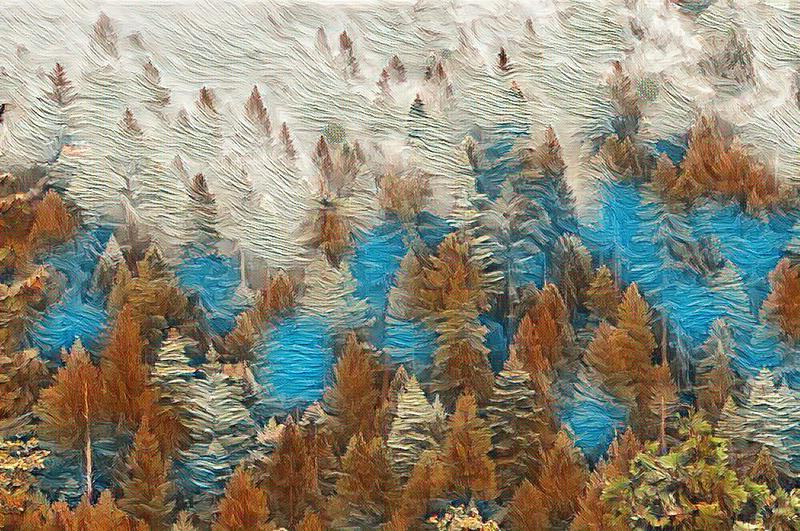

Image comparison slider

photo by Dan Otis, Image filter by lunapicThis simle image comparison slider allows you to compare two images, with the use of a vertical slider that you drag left and right.
The plugin is written in pure javascript, and the markup is kept to the bare minimal, making it easy to add to any project. The slider will work on touchscreen devices.
The image divider can be changed by editing the small amount of css that needs to be included.
<link rel="stylesheet" type="text/css" href="css/image-comparison-slider.css">
<div class="image-spliter">
<div class="mover"></div>
<img class="img-left" src="path/to/image1.jpg">
<img class="img-right" src="path/to/image2.jpg">
</div>
<script src="js/image-comparison-slider.min.js"></script>
find the repo over on github